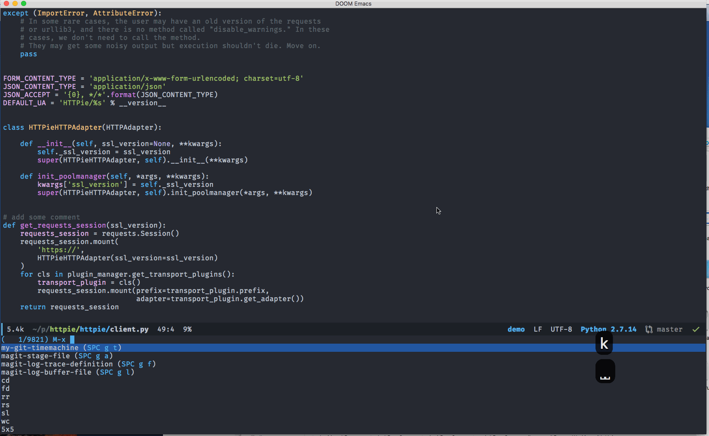

Posts tagged "Git":
Emacs is an awesome git client
Emacs is much more than just a text editor in many ways. It’s an excellent File Explorer(with dired), notes organizer and GTD tool (with Org mode) and much more.
Among so many roles Emacs can be,it’s also an awesome Git client across multiple platforms including macOS, Linux and Windows.
necessary packages
This is made possible via several Emacs packages:
Magit is magical
Among all these packages, Magit is the most critical one and does most of the heavy lifting. It alone enables me to perform all the git operations I can
think of.
Magit website has an excellent guide to walk you through all the basic things like:
- show the current repository status
- stage/commit files/changes
- show git log history and move through logs
- rebase/merge/branching
- diffing
There are a few things from Magit I particularly like because they’re MUCH easier with magit than the git CLI or even some other git tools.
Here’s my list:
- stage a particular
hunkof a file - quickly discard changes to files/hunks
- list all the commits affecting a particular file
- list all the commits affecting a particular function
Magit is really sweet for git, but as I’m so used to Vim editing mode(that’s where the evil package really shines), I want to use Vim keybinding for operating magit buffer (for eg, use hjkl for navigating). evil-magit makes me feel right at home.
time travelling
I realized there are times I want to see a particular version for a given file or just traverse through versions; git time machine is the package that helps me with that. However I need a little tweak so I can select the particular version as the starting point (other than current head).
After starting the git time machine, you can use p to go to the previous version while n goes to the next version. There is also a line at the top of the buffer to indicate which version you’re looking at along with other relevant information.
See it in action below: 
show indication of changes in real time
Sometimes we may also find it helpful that Emacs will show the indication that some lines are changed since the last commit on the fringe of the buffer for whatever reason, that’s what git gutter fringe package is for.
It will give you the visual indication on the left fringe of the current buffer if there is change, something like this:
Again, with a little tweak we can easily get a list of changes in the current buffer and jump to the one I’m interested in:
my workflow
There are basically two workflows for me.
If I just want to do things like the following with the current file:
- get diff for changes
- get list of commits
- get list of commits affect a function
- stage current file
Then I just invoke the key binding corresponds to the magit command without openning magit status buffer.
However if I want to:
- get the status of a repository
- stage/unstage certain files
- commit current staged changes
- pull/push from remote
- branching/merging
then I would use magit-status (I bound to SPC g s) to launch the magit status buffer and start from there.
Here is a demo showing some of the operations mentioned above:
keybinding
I use space as leader key for Evil mode, and all git related functions are
bound to g using package general:
(general-define-key :states '(normal visual insert emacs) :keymaps 'override :prefix "SPC" :non-normal-prefix "M-m" "g" '(:ignore t :which-key "Git") "gs" '(magit-status :which-key "Git status") "ga" '(magit-stage-file :which-key "stage this file") "gb" '(magit-blame :which-key "Git blame") "gc" '(magit-commit :which-key "Git commit") "gd" '(magit-diff-buffer-file :which-key "Git diff") ;; list commits affect current function "gf" '(magit-log-trace-definition :which-key "show commits for this function") ;; list commits affect current file "gl" '(magit-log-buffer-file :which-key "show commits for this file") "gg" '(hydra-git/body :which-key "Git gutter") "gp" '(magit-push-current :which-key "Git push") "gt" '(my-git-timemachine :which-key "Git time machine") )
So pressing Space g will show a list of available keys:
There is also a nice cheatsheet from excellent API documentation browser software: Dash.
Conclusion
Hopefully by now you have seen how awesome Emacs is as a git client.
It’s pretty much a no-brainer for anyone who already uses Emacs day to day to adopt those packages (IF they have not done so).
But even for non-Emacs user, if you need to work with git, I would still recommend it even this is the ONLY thing you use Emacs for.
With all these packages and a little bit of customization Emacs turns into a top-notch and FREE (also across platform) git client.